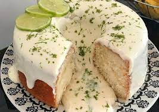
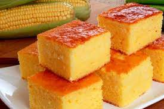

Bolo de Leite NinhoIngredientes massa:
Cobertura:
Modo de preparo da massa:Na batedeira, bata as claras em neve e reserve. Ainda na batedeira, em outra tigela, bata as gemas, a manteiga e o açúcar até formar um creme fofo. Sem parar de bater, adicione a farinha alternando com o leite em pó e o leite quente, sem parar de bater, até ficar homogêneo. Misture as claras em neve e o fermento com uma colher. Transfira para uma fôrma de 30cm x 22cm untada e enfarinhada e leve ao forno médio, preaquecido,por 30 minutos ou até dourar. Modo de preparo da cobertura:Para o recheio e cobertura, na batedeira, bata o leite condensado com a margarina e o leite em pó até ficar homogêneo. Misture o creme de leite com uma colher e reserve. Desenforme o bolo depois de frio, corte ao meio e recheie com metade do creme. Cubra com a outra massa e cubra com o creme restante.Polvilhe com raspas de chocolate branco e sirva. |

Bolo de LimãoIngredientes:
Ingredientes cobertura:
Modo de preparo da massa:Separe as claras das gemas e reserve as claras. Em um liquidificador, bata as gemas, o leite, a manteiga e o açúcar. Em uma tigela, acrescente o suco de dois limões e as raspas à mistura. Acrescente a farinha de trigo aos poucos. Bata as claras em neve e adicione à massa. Acrescente o fermento em pó. Leve ao forno preaquecido a 180º C por 40 minutos. Modo de preparo da cobertura:Em uma frigideira, misture a manteiga, o leite condensado e o creme de leite. Quando estiver bem misturado, desligue o fogo e acrescente o suco de meio limão. Despeje a calda sobre o bolo desenformado. Finalize com raspas de limão. |

Bolo de ChocolateIngredientes massa:
Cobertura:
Modo de preparo da massa:Em uma tigela misturar o açúcar e o chocolate em pó, em seguida, misturar as gemas e o óleo Aos poucos acrescentar o leite e o trigo em seguida juntar o fermento e por fim juntar as claras em neve Despejar numa forma untada e colocar para assar por aproximadamente 40 minutos Modo de preparo da cobertura:Misturar tudo numa panela, em fogo baixo Não parar de mexer até ficar cremoso Depois despejar em cima do bolo ainda quente |

Bolo de MilhoIngredientes:
Modo de preparo:Escorra o milho e use a própria lata para as medidas. Unte e enfarinhe uma forma de bolo com furo. Pré-aqueça o forno. Coloque no liquidificador o milho (já escorrido), o leite, açúcar, flocão de milho, óleo, ovos e bata bem até que o milho fique bem moído. Se quiser, pode acrescentar duas colheres de sopa de coco ralado. Acrescente o fermento em pó e pulse o liquidificador 3 vezes. Despeje essa massa na forma e leve ao forno médio. Deixe assar por, aproximadamente, 40 minutos. Faça o teste do palito e observe um tom dourado médio, para saber que o bolo está pronto. Espere esfriar totalmente para desenformar. |

Bolo de LaranjaIngredientes:
Modo de preparo:Bata no liquidificador os ovos, o açúcar, o óleo, o suco e a casca da laranja e o leite. Passe para uma tigela e acrescente a farinha de trigo e o fermento. Leve para assar em uma forma com furo central, untada e enfarinhada, por mais ou menos 30 minutos. Desenforme o bolo e molhe com suco de laranja. |

Bolo de FubaIngredientes:
Modo de preparo:Bata todos os ingredientes no liquidificador. Coloque em uma forma untada e enfarinhada. Leve ao forno preaquecido e deixe assar, por cerca de 40 minutos. |